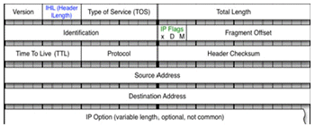
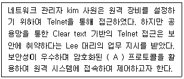
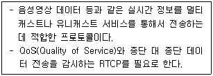
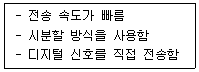
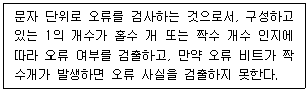
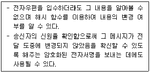
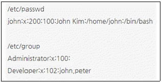

네트워크관리사-1급 (2022-10-30 기출문제)
1과목: TCP/IP
1. IP Address ′128.10.2.3′을 바이너리 코드로 변환한 값은?
- 11000000 00001010 00000010 00000011
- 10000000 00001010 00000010 00000011
- 10000000 10001010 00000010 00000011
- 10000000 00001010 10000010 00000011
(정답률: 63%)

2. B Class에 대한 설명 중 옳지 않은 것은?
- Network ID는 128.0 ~ 191.255 이고, Host ID는 0.1 ~ 255.254 가 된다.
- IP Address가 150.32.25.3인 경우, Network ID는 150.32 Host ID는 25.3 이 된다.
- Multicast 등과 같이 특수한 기능이나 실험을 위해 사용된다.
- Host ID가 255.255일 때는 메시지가 네트워크 전체로 브로드 캐스트 된다.
(정답률: 34%)
3. 네트워크 ID ′210.182.73.0′을 6개의 서브넷으로 나누고, 각 서브넷 마다 적어도 30개 이상의 Host ID를 필요로 한다. 적절한 서브넷 마스크 값은?
- 255.255.255.224
- 255.255.255.192
- 255.255.255.128
- 255.255.255.0
(정답률: 38%)
4. IPv6에서 사용되는 전송 방식이 아닌 것은?
- Anycast
- Unicast
- Multicast
- Broadcast
(정답률: 60%)
5. IPv6은 몇 비트의 Address 필드를 가지고 있는가?
- 32
- 64
- 128
- 256
(정답률: 40%)
6. TCP 헤더 포맷에 대한 설명으로 옳지 않은 것은?
- Checksum은 1의 보수라 불리는 수학적 기법을 사용하여 계산된다.
- Source 포트 32bit 필드는 TCP 연결을 위해 지역 호스트가 사용하는 TCP 포트를 포함한다.
- Sequence Number 32bit 필드는 세그먼트들이 수신지 호스트에서 재구성되어야 할 순서를 가리킨다.
- Data Offset 4bit 필드는 32bit 워드에서 TCP 헤더의 크기를 가리킨다.
(정답률: 20%)
7. IP 헤더 필드들 중 처리량, 전달 지연, 신뢰성, 우선순위 등을 지정해 주는 것은?

- IHL(IP Header Length)
- TOS(Type of Service)
- TTL(Time To Live)
- Header Checksum
(정답률: 14%)
8. UDP 헤더 포맷에 대한 설명으로 옳지 않은 것은?
- Source Port : 데이터를 보내는 송신측의 응용 프로세스를 식별하기 위한 포트 번호이다.
- Destination Port : 데이터를 받는 수신측의 응용 프로세스를 식별하기 위한 포트 번호이다.
- Length : 데이터 길이를 제외한 헤더 길이이다.
- Checksum : 전송 중에 세그먼트가 손상되지 않았음을 확인 할 수 있다.
(정답률: 54%)
9. ICMP 프로토콜의 기능에 대한 설명 중 옳지 않은 것은?
- 모든 호스트가 성공적으로 통신하기 위해서 각 하드웨어의 물리적인 주소 문제를 해결하기 위해 사용된다.
- 네트워크 구획 내의 모든 라우터의 주소를 결정하기 위해 라우터 갱신 정보 메시지를 보낸다.
- Ping 명령어를 사용하여 두 호스트간 연결의 신뢰성을 테스트하기 위한 반향과 회답 메시지를 지원한다.
- 원래의 데이터그램이 TTL을 초과할 때 시간초과 메시지를 보낸다.
(정답률: 47%)
10. RARP에 대한 설명 중 올바른 것은?
- 시작지 호스트에서 여러 목적지 호스트로 데이터를 전송할 때 사용된다.
- TCP/IP 프로토콜의 IP에서 접속없이 데이터의 전송을 수행하는 기능을 규정한다.
- 하드웨어 주소를 IP Address로 변환하기 위해서 사용한다.
- IP에서의 오류제어를 위하여 사용되며, 시작지 호스트의 라우팅 실패를 보고한다.
(정답률: 27%)
11. 다음 TCP/IP 프로토콜 가운데 가장 하위 계층에 속하는 것은?
- UDP
- FTP
- IP
- TCP
(정답률: 47%)
12. TCP/IP protocols 환경에서 Flie 전송을 위해 사용하는 FTP protocol에 대한 설명 중 올바르게 설명한 것은?
- 파일 전송 프로토콜로 ASCII 코드를 작성된 파일만 전송하는데 사용된다.
- 데이터 전송은 21번 포트를 사용하여 연결 제어는 20포트를 사용한다.
- 리눅스 환경에서 사용 가능한 명령들로 ls , pwd , get , put 등이 있다.
- 서비스에 등록되지 않은 익명의 사용자을 위한 계정은 Everyone 이다.
(정답률: 14%)
13. 다음은 RFC 1918 Private IP address에 대한 설명이다. 올바르게 설명한 것을 고르시오.
- 공인 IP address와 같이 공용망에서 사용될 수 있다.
- 외부 인터넷 연결이 안 된 장치에 할당될 수 있다.
- 중복 할당되어 충돌된 주소는 제거될 수 있다.
- 공인 IP address와 함께 KR-NIC에서 할당된다.
(정답률: 20%)
14. (A) 안에 들어가는 용어 중 올바른 것은?

- L2TP
- SSH
- PPTP
- SSL
(정답률: 69%)
15. 네트워크 및 서버 관리자 Kim 사원은 장기간 출장명령을 받은 관계로 회사 내부에 있는 업무용 PC에 원격데스크톱(Terminal service)을 설정하려고 한다. 하지만 업무용 PC가 공인IP가 아니라 IP공유기 내부에 있는 사설IP로 사용 중이다. 외부에서 이 업무용 PC에 원격데스크톱(Terminal service)을 사용하기 위한 설정에 있어 옳은 것은?[단, IP 공유기에 할당 공인 IP는 210.104.177.55, 업무용 PC에 할당된 사설 IP(공유기 내부)는 192.168.0.22, 업무용 PC는 원격설정이 되어 있음 (TCP/3389)]
- 방화벽에서 192.168.0.22번으로 tcp/3389번에 대한 접속을 허용한다
- IP 공유기 내부에 210.104.177.55번에 포트포워딩을 설정한다.
- 업무용 PC에 반드시 Windows login password를 설정한다.
- 업무용 PC에 반드시 CMOS password를 설정한다.
(정답률: 14%)
16. HTTP의 응답 메시지(Response Message) 내의 상태 라인(Status Line)은 응답 메시지의 상태를 나타낸다. 다음 중 클라이언트가 요청한 메소드에 대해 응답할 때, 요청된 메소드가 성공적으로 수행되었을 경우 보내는 상태 코드는?
- 503
- 302
- 100
- 200
(정답률: 47%)
2과목: 네트워크 일반
17. 전자 메일의 안정적인 전송을 위해 제안된 프로토콜로 RFC 821에 규정되어 있는 메일 전송 프로토콜은?
- POP3
- IMAP
- SMTP
- NNTP
(정답률: 60%)
18. 전송한 프레임의 순서에 관계없이 단지 손실된 프레임만을 재전송하는 방식은?
- Selective-repeat ARQ
- Stop-and-wait ARQ
- Go-back-N ARQ
- Adaptive ARQ
(정답률: 54%)
19. 다음 설명에 알맞은 프로토콜은?

- TCP(Transmission Control Protocol)
- SIP(Session Initiation Protocol)
- RSVP(ReSouece reserVation Protocol)
- RTP(Real-time Transfer Protocol)
(정답률: 54%)
20. 광케이블을 이용하는 통신에서 저손실의 파장대를 이용하여 광 파장이 서로 다른 복수의 광 신호를 한 가닥의 광섬유에 다중화 시키는 방식은?
- 코드 분할 다중 방식(CDM)
- 직교 분할 다중 방식(OFDM)
- 시간 분할 다중 방식(TDM)
- 파장 분할 다중 방식(WDM)
(정답률: 40%)
21. 네트워크 계층에서 데이터의 단위는?
- 트래픽
- 프레임
- 세그먼트
- 패킷
(정답률: 44%)
22. 다음의 설명에 해당되는 것은?

- Broadband
- Baseband
- Multiplexing
- Encapsulation
(정답률: 14%)
23. 다음에서 설명하는 오류검사 방식은?

- 해밍 코드
- 블록합 검사
- 순환중복 검사
- 패리티 검사
(정답률: 60%)
24. 디지털 변조로 옳지 않은 것은?
- ASK
- FSK
- PM
- QAM
(정답률: 27%)
25. PCM 방식에서 아날로그 신호의 디지털 신호 생성 과정으로 올바른 것은?
- 아날로그신호 - 표본화 - 부호화 - 양자화 - 디지털신호
- 아날로그신호 - 표본화 - 양자화 - 부호화 - 디지털신호
- 아날로그신호 - 양자화 - 표본화 - 부호화 - 디지털신호
- 아날로그신호 - 양자화 - 부호화 - 표본화 - 디지털신호
(정답률: 47%)
26. OSI 7 Layer에 Protocol을 연결한 것 중 옳지 않은 것은?
- Application : FTP, SNMP, Telnet
- Transport : TCP, SPX, UDP
- DataLink : NetBIOS, NetBEUI
- Network : ARP, DDP, IPX, IP
(정답률: 7%)
27. 네트워크 액세스 방법에 속하지 않는 것은?
- CSMA/CA
- CSMA/CD
- POSIX
- Token Pass
(정답률: 19%)
3과목: NOS
28. Windows Server 2016 Hyper-V에서 특정 시간 지점 이미지를 쉽게 생성할 수 있는 기능으로 이 특정 시간 지점 이미지를 이용해 VM의 특정 시점 상태로 손쉽게 복구할 수 있다. 이 기능을 무엇이라 하는가?
- Production Checkpoint
- Alternate Credentials Support
- Integration Service
- Update Manager
(정답률: 20%)
29. ′runlevel 5′로 로그인 되어 있는 상태에서 Apache에 소스컴파일 설치를 하여 ′/etc/init.d′의 경로에 httpd 데몬 shell script를 생성하여 정상적인 실행을 확인하였다. 해당 데몬을 재부팅후에 자동으로 실행되도록 하는 방법으로 알맞은 것은?
- systemctl restart httpd.service
- /etc/init.d/httpd restart
- chkconfig --list | grep httpd
- chkconfig --level 5 httpd on
(정답률: 14%)
30. 네임서버 존(Zone) 파일의 ORIGIN을 의미하는 특수 문자로 Public Domain을 의미하는 문자로 알맞은 것은?
- @
- .
- #
- $
(정답률: 47%)
31. Apache 설정파일인 ′httpd.conf′에서 특정 디렉터리에 대한 접근방식을 ′All′로 설정하고, 해당 디렉터리에 ′.htaccess′파일을 생성하여 옵션을 변경 할 수 있도록 해주는 설정은?
- AllowOverride
- AccessFileName
- Limit
- Indexes
(정답률: 20%)
32. Linux에서 키보드 실행중지 [Ctrl + c]입력 시 보내지는 시그널로 알맞은 것은?
- 1) SIGHUP
- 2) SIGINT
- 9) SIGKILL
- 19) SIGSTOP
(정답률: 7%)
33. Park사원은 회사내 Windows Server2016의 IIS를 이용해 만든 FTP서버의 설정을 패시브 모드로 바꾸고 데이터 교환을 위한 포트를 60000~60100번 포트로 변경하고자 한다. 이 때 방화벽 Inbound Rules에서 포트를 입력할 때 올바른 형식은?
- 21,60000-60100
- 21,60000:60100
- 20,60000:60100
- 20,60000-60100
(정답률: 40%)
34. 서버 담당자 Park 사원은 Hyper-V 부하와 서비스의 중단 없이 Windows Server 2012 R2 클러스터 노드에서 Windows Server 2016으로 운영체제 업그레이드를 진행하려고 한다. 다음 중 작업에 적절한 기능은 무엇인가?
- 롤링 클러스터 업그레이드
- 중첩 가상화
- gpupdate
- NanoServer
(정답률: 47%)
35. 사용자 권한이 1777인 디렉터리에 대한 설명으로 옳지 않은 것은?
- 누구나 접근 가능한 디렉터리이다.
- 누구나 모든 파일을 읽고 쓸 수 있다.
- 누구나 모든 파일을 수정하고 삭제 할 수 있다.
- 누구나 서브 디렉터리를 생성 할 수 있다.
(정답률: 20%)
36. Linux 시스템에서 기본적 명령과 자원을 이용하여 시스템의 사양을 살펴보려고 한다. 연결이 옳지 않은 것은?
- CPU 종류 조사 : cat /proc/cpuinfo
- 메모리 사이즈 조사 : free
- 디스크 사이즈 조사 : top
- 네트워크 인터페이스 카드 조사 : ifconfig
(정답률: 34%)
37. BIND 관련 설정 파일에 대한 설명으로 옳지 않은 것은?
- ′named.conf′는 존(Zone) 파일의 위치, 접근 권한에 대한 설정, 설정할 도메인의 종류와 각 도메인에 대한 설정 파일 등에 대한 정보를 가지고 있다.
- BIND의 설정파일은 ′named.conf′ 파일과 존 파일들로 구분된다.
- ′named.conf′ 파일 수정시 주석은 ′//′을 사용하고, 존 파일 수정시 주석은 ′#′을 사용한다.
- ′named.conf′ 파일에 사용하는 도메인을 등록하고 그 도메인에 대한 세부 설정은 존 파일에 수행한다.
(정답률: 57%)
38. SOA 레코드의 설정 값에 대한 설명으로 옳지 않은 것은?
- 주 서버 : 주 영역 서버의 도메인 주소를 입력한다.
- 책임자 : 책임자의 주소 및 전화번호를 입력한다.
- 최소 TTL : 각 레코드의 기본 Cache 시간을 지정한다.
- 새로 고침 간격 : 주 서버와 보조 서버간의 통신이 두절되었을 때 다시 통신할 시간 간격을 설정한다.
(정답률: 25%)
39. ′www.microsoft.com′이란 사이트의 IP Address를 획득하려고 할 때 Windows Server에서 'cmd'를 이용한 방법으로 올바른 것은?
- netstat www.microsoft.com
- nslookup www.microsoft.com
- ipconfig www.microsoft.com
- telnet www.microsoft.com
(정답률: 57%)
40. Linux 파티션에 담긴 자료를 윈도우 기반 컴퓨터가 공유하거나, 윈도우 파티션에 담긴 자료를 Linux 기반 컴퓨터가 공유할 수 있도록 제공하는 서비스로 올바른 것은?
- SAMBA
- BIND
- IRC
- MySQL
(정답률: 60%)
41. Linux의 ′vi′ 명령어 중 변경된 내용을 저장한 후 종료하고자 할 때 사용해야 할 명령어는?
- :wq
- :q!
- :e!
- $
(정답률: 67%)
42. Linux의 퍼미션(Permission)에 대한 설명 중 옳지 않은 것은?
- 파일의 그룹 소유권을 변경하기 위한 명령은 ′chgrp′이다.
- 파일의 접근모드를 변경하기 위한 명령은 ′chmod′이다.
- 모든 사용자에게 모든 권한을 부여하려면 권한을 ′666′으로 변경한다.
- 파일의 소유권을 변경하기 위한 명령은 ′chown′이다.
(정답률: 60%)
43. Sendmail을 이용하여 메일링 리스트를 구성하려고 할 때 수정할 파일은?
- /etc/access
- /etc/mail/local-host-names
- /etc/aliases
- /etc/mail/rejectlist
(정답률: 14%)
44. DNS 레코드 중 IP Address를 도메인 네임으로 역매핑하는 레코드는?
- SOA
- A
- PTR
- CNAME
(정답률: 47%)
45. Windows Server 2016의 ′netstat′ 명령어로 알 수 없는 정보는?
- TCP 접속 프로토콜 정보
- ICMP 송수신 통계
- UDP 대기용 Open 포트 상태
- 도메인에 할당된 IP주소 확인
(정답률: 34%)
4과목: 네트워크 운용기기
46. CISCO 라우터 상에서 OSPF의 Neighbor의 상태를 확인할 수 있는 명령어로 올바른 것은?
- show ip ospf interface
- show ip ospf database
- show ip ospf neighbor
- show ip ospf border-router
(정답률: 54%)
47. VLAN(Virtual LAN)에 대한 설명으로 올바르지 않는 것은?
- VLAN은 하나 이상의 물리적인 LAN에 속하는 지국들을 브로드캐스트 영역으로 그룹화한다.
- VLAN은 물리적 회선이 아닌 소프트웨어에 의해 논리적으로 구성이 된다.
- 지국들의 VLAN 구성을 위한 방식은 수동식, 자동식 그리고 반자동식 구성 방법이 있다.
- VLAN의 물리적인 포트에 의한 VLAN 구성 방식은 4계층의 포트 주소를 사용한다.
(정답률: 19%)
48. 리피터(Repeater)에 대한 설명으로 올바른 것은?
- 콜리젼 도메인(Collision Domain)을 나누어 주는 역할을 한다.
- 필터링과 포워딩 기능을 수행한다.
- 전송거리 연장을 위한 장비이다.
- 브로드캐스트 도메인(Broadcast Domain)을 나누어 주는 역할을 한다.
(정답률: 54%)
49. 서로 다른 형태의 네트워크를 상호 접속하는 장치로 필요할 경우 프로토콜 변환을 수행하는 장치는?
- Frame Relay Access Device
- Remote Access Server
- Gateway
- Switching Hub
(정답률: 20%)
50. 내부 도메인 라우팅(Intra-domian Routing 또는 Intra-AS Routing) 프로토콜에 해당되지 않은 것은?
- RIP
- OFPF
- IS-IS
- BGP
(정답률: 20%)
5과목: 정보보호개론
51. 네트워크를 관리하는 Kim은 옆 회사에서 DNS 스푸핑 공격을 당해서 일부 계정이 해킹당헀고 이로 인해 개인정보 유출이 발생하게 되었음을 전해들었다. Kim의 회사에 DNS 스푸핑 공격을 막기 위해서 보안조치를 회사전체에 매뉴얼을 작성하여 전 부서에 발송하였다. 매뉴얼에 들어갈 내용이 아닌 것은?
- 전체 서버 및 업무용 PC의 비밀번호를 변경한다.
- 네트워크 트래픽을 지속적으로 감시한다.
- Hosts 파일전체를 검사하고 중요 사이트를 미리 기재해둔다.
- Gateway의 mac address를 동적으로 변환한다.
(정답률: 54%)
52. Brute Force 공격에 대한 설명으로 올바른 것은?
- 암호문을 풀기 위해 모든 가능한 암호 키 조합을 적용해 보는 시도이다.
- 대량의 트래픽을 유발해 네트워크 대역폭을 점유하는 형태의 공격이다.
- 네트워크상의 패킷을 가로채 내용을 분석해 정보를 알아내는 행위이다.
- 공개 소프트웨어를 통해 다른 사람의 컴퓨터에 침입하여 개인정보를 빼내는 행위이다.
(정답률: 40%)
53. 피싱(Phishing)에 대한 설명으로 옳지 않은 것은?
- 개인 정보(Private Data)와 낚시(Fishing)의 합성어로 해커들이 만든 용어이다.
- 사회 공학적 방법 및 기술적 은닉기법을 이용해서 민감한 개인정보, 금융계정 정보를 절도하는 금융사기 수법이다.
- 최근에는 DNS 하이재킹 등을 이용하여 사용자를 위장 웹사이트로 유인, 개인 정보를 절도하는 피싱의 진화된 형태의 파밍(Pharming)도 출현하였다.
- 개인 정보의 획득을 위해, 은행과 같은 주요 사이트의 서버를 대상으로 피싱이 이루어지고 있다.
(정답률: 14%)
54. 넷스케이프사에서 전자상거래 등의 보안을 위해 개발한 암호화 프로토콜로, 서버와 클라이언트 간 인증방식으로 RSA 방식과 X.509를 사용하고, 실제 암호화된 정보는 새로운 암호화 소켓채널을 통해 전송하는 방식은?
- S-HTTP(Secure Hypertext Transfer Protocol)
- SET(Secure Electronic Transaction)
- SSL(Secure Sockets Layer)
- SSH(Secure Shell)
(정답률: 27%)
55. 다음 전자 우편 보안 기술의 종류에 해당하는 것은?

- PEM(Privacy Enhanced Mail)
- S/MIME(Secure Multi-Purpose Internet Mail Extensions)
- PGP(Pretty Good Privacy)
- SMTP
(정답률: 20%)
56. 다음은 ′/etc/passwd′ 파일의 내용과 ′/etc/group′ 파일의 내용 일부 이다. 이에 대한 설명으로 적절한 것은?

- john의 그룹 ID는 200 이다.
- john은 Developer 그룹을 주그룹으로 갖는다.
- peter는 john과 함께 Developer Group에 속한다.
- peter와 john은 모든 파일들에 대해서 같은 권한을 갖는다.
(정답률: 34%)
57. 서로 다른 메시지가 같은 해쉬값이 되지 않도록 하는 해쉬 함수의 성질은?
- 충돌 저항성
- 비트 길이
- 키 길이
- 엔트로피(entropy)
(정답률: 27%)
58. 회사의 사설 네트워크와 외부의 공중 네트워크 사이에 중립 지역으로 삽입된 소형 네트워크를 의미하는 용어는?
- DMZ
- Proxy
- Session
- Packet
(정답률: 54%)
59. 암호화 기법 중 공개키 암호기법에 해당하는 것은?
- RSA
- RC4
- IDEA
- DES
(정답률: 40%)
60. 정보 보안 기능에 대한 용어 설명이 옳지 않은 것은?
- 접근 통제 : 비인가자가 컴퓨터 시스템에 액세스하지 못하도록 하는 것
- 인증 : 전문 발신자와 수신자를 정확히 식별하고 제삼자가 위장하여 통신에 간여할 수 없도록 하는 것
- 부인 방지 : 데이터에 불법적으로 접근하는 것을 막기 위한 것
- 무결성 : 인가자 이외는 전문을 변경할 수 없게 하는 것
(정답률: 40%)